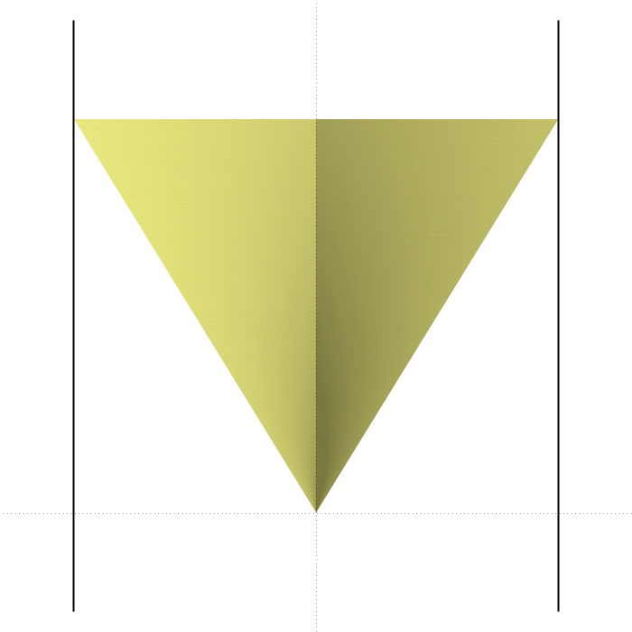
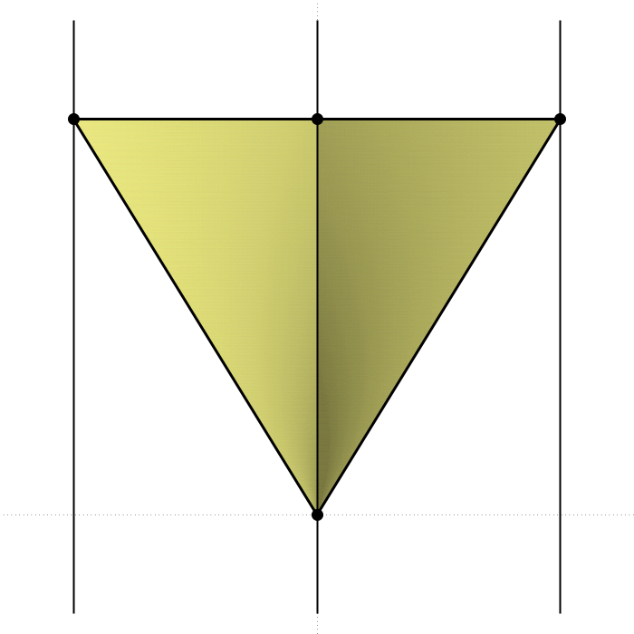

8.3 Main Result
8.3.1 Algorithm Psuedo-Code
We are now ready to prove the main result. We begin by presenting pseudo-code for the algorithm described in Theorem 1.6. First some basic subroutines are defined.
- \(\mathcal{E} := \mathcal{D} \ \&\ \{F_1,\ldots,F_k\}\)
- Input: \(\mathcal{D}\) is a CAD of \(\mathbb{R}^n\) and \(\{ F_1, \ldots, F_k \}\) is a set of QFFs. Each \(F_i, 1 \le i \le k\) defines a semialgebraic set \(S_i \subset \mathbb{R}^n\). Formulas \(F_i\) and those defining cells of \(\mathcal{D}\) contain \(s\) different polynomials of maximum degree \(d\) in \(\mathbb{Z}[x_1,\ldots,x_n]\).
- Output: \(\mathcal{E}\) is a refinement of \(\mathcal{D}\) compatible with each of the sets \(S_i\).
- Description: Construct a “classical” CAD of \(\mathbb{R}^n\), compatible with \(\{ F_1, \ldots, F_k \}\) and all cells of \(\mathcal{D}\) using classical CAD algorithm (see Proposition 2.9).
- Complexity: \((sd)^{O(1)^{n}}\).
- \(G := {\operatorname{fr} \left( F \right)}\)
- Input: \(F\), a QFF defining a semialgebraic set \(X \subset \mathbb{R}^n\). Formula \(F\) contains \(s\) different polynomials of maximum degree \(d\) in \(\mathbb{Z}[x_1,\ldots,x_n]\).
- Output: \(G\), a QFF defining a semialgebraic set \(Y \subset \mathbb{R}^n\) such that \(Y\) is the frontier of \(X\).
- Description: Represent the frontier of \(X\) as a first-order formula and apply quantifier elimination to obtain \(G\) (see Lemma 8.1).
- Complexity: \((sd)^{O(n^2)}\).
- \(N := \rm{Decrement}(M)\)
- Input: \(M \in \{0,1\}^k, k > 0\).
- Output: \(N \in \{0,1\}^k\) is the index immediately prior to \(M\) with respect to \(<_{\rm{lex}}\).
- Description: Straightforward. E.g., view \(M\) as an unsigned integer in binary and subtract 1.
- Complexity: \(O(1)\).
We now present the algorithm from Theorem 1.6.
\[ {\mathcal D} := \mathrm{CadFC}(F) \]
Input: \(F\): a QFF representing a semialgebraic set \(S \subset \mathbb{R}^n\).
Output: A CAD \(\mathcal D\) of \(\mathbb{R}^n\) compatible with \(S\) and satisfying the frontier condition.
Complexity: \[(sd)^{O(1)^{n2^n}}\] where \(F\) contains \(s\) different polynomials of maximum degree \(d\) in \(\mathbb{Z}[x_1,\ldots,x_n]\).
Initialise \(M = (i_1,\ldots,i_{n-1}) := (1,\ldots,1) \in \{0,1\}^{n-1}\).
Let \(\mathcal{E}_M := \bf{true} \ \&\ \{ F \}\), where \(\bf{true}\) is the trivial CAD of \(\mathbb{R}^n\), be the initial CAD.
Define the initial pair \(({\mathcal E}_M, \mathcal{F}_M):=({\mathcal E}, \emptyset)\).
\(\mathcal{E}_M\) is a refinement of \(\mathcal{E}\) and \(\mathcal{F}_M\) is a set of QFFs, each defining a semialgebraic set contained in a union of cells of \(\mathcal{E}_M\) with index \(\le_{\rm{lex}}(i_1,\ldots,i_{n-1},1)\).
While \((0,\ldots,0) <_{\rm{lex}}M\), do
Let \(N := {\rm Decrement} (M)\).
Compute \(\mathcal{E}_N := \mathcal{E}_M\ \&\ {\mathcal F}_M\).
Let \(\mathcal{A}_0\) be the family of QFFs defining all cells of \(\mathcal{E}_N\) with index \((i_1,\ldots,i_{n-1},0)\)
and \(\mathcal{A}_1\) be the family of QFFs defining all cells of \(\mathcal{E}_N\) with index \((i_1,\ldots,i_{n-1},1)\).
Compute the set of frontiers \[\begin{align*} {\mathcal F}_{N,0} =\ & \left\{ {\operatorname{fr} \left( F_0 \right)} \mid F_0 \in \mathcal{A}_0 \right\}, \\ {\mathcal F}_{N,1} =\ & \left\{ {\operatorname{fr} \left( F_1 \land \neg( F_{1,B} \lor F_{1,T} ) \right)} \mid F_1 \in \mathcal{A}_1, F_{1,B}, F_{1,T} \in \mathcal{A}_0 \right\}, \\ {\mathcal F}_N =\ & {\mathcal F}_{N,0} \cup {\mathcal F}_{N,1}, \\ \end{align*}\] where \(F_{1,B}\) (resp. \(F_{1,T}\)) is a QFF defining the bottom (resp. top) of the sector cell defined by \(F_1\), or \(\mathbf{false}\) if the bottom (resp. top) does not exist.
Let \(M := N\).
Return \({\mathcal E}_{(0,\ldots,0)}\).
8.3.2 Worked Example

Figure 8.2: Illustrates the initial decomposition constructed in Step 1 (projection onto the \((x,y)\)-plane).
Figure 8.3: Illustrates how \({\operatorname{fr} \left( S \right)}\) interacts with the cells of \(\mathcal{E}\). The frontier is indicated by a dashed line, with the blow-up subset above the origin represented by a node.

Figure 8.4: Shows cells of \(\mathcal{E}_{(0,1)}\), the refinement of \(\mathcal{E}\) compatible with \({\operatorname{fr} \left( S \right)}\) computed in Step 4.
| Label | Index | Formula |
|---|---|---|
| \((1,1,1)\) | \(\{ x < -1 \}\) | |
| \(C_1\) | \((0,1,1)\) | \(\{ x = -1 \}\) |
| \((1,1,1)\) | \(\{ -1 < x < 1, y < \vert x \vert \}\) | |
| \(C_2\) | \((1,0,1)\) | \(\{ -1 < x < 1, y = \vert x \vert \}\) |
| \((1,1,1)\) | \(\{ -1 < x < 1, \vert x \vert < y < 1, z < \vert x/y \vert \}\) | |
| \(S\) | \((1,1,0)\) | \(\{ -1 < x < 1, \vert x \vert < y < 1, z = \vert x/y \vert \}\) |
| \((1,1,1)\) | \(\{ -1 < x < 1, \vert x \vert < y < 1, z > \vert x/y \vert \}\) | |
| \(C_3\) | \((1,0,1)\) | \(\{ -1 < x < 1, y = 1 \}\) |
| \((1,1,1)\) | \(\{ -1 < x < 1, y > 1 \}\) | |
| \(C_4\) | \((0,1,1)\) | \(\{ x = 1 \}\) |
| \((1,1,1)\) | \(\{ x > 1 \}\) |
| Label | Index | Formula |
|---|---|---|
| \({C'_1}\) | \((0,0,0)\) | \(\{ x = -1, y = 1, z = 1 \}\) |
| \({C'_2}\) | \((1,0,0)\) | \(\{ -1 < x < 0, y = -x, z = 1 \}\) |
| \({C''_{2,1}}\) | \((0,0,0)\) | \(\{ x = y = 0, z = 0 \}\) |
| \({C''_{2,2}}\) | \((0,0,1)\) | \(\{ x = y = 0, 0 < z < 1 \}\) |
| \({C''_{2,3}}\) | \((0,0,0)\) | \(\{ x = y = 0, z = 1 \}\) |
| \({C'''_2}\) | \((1,0,0)\) | \(\{ 0 < x < 1, y = x, z = 1 \}\) |
| \(S'\) | \((1,1,0)\) | \(\{ -1 < x < 0, -x < y < 1, z = -x/y \}\) |
| \(S''\) | \((0,1,0)\) | \(\{ x = 0, 0 < y < 1, z = 0 \}\) |
| \(S'''\) | \((1,1,0)\) | \(\{ 0 < x < 1, x < y < 1, z = x/y \}\) |
| \(C'_3\) | \((1,0,0)\) | \(\{ -1 < x < 0, y = 1, z = -x \}\) |
| \(C''_3\) | \((0,0,0)\) | \(\{ x = 0, y = 1, z = 0\}\) |
| \(C'''_3\) | \((1,0,0)\) | \(\{ 0 < x < 1, y = 1, z = x \}\) |
| \({C'_4}\) | \((0,0,0)\) | \(\{ x = 1, y = 1, z = 1 \}\) |
We demonstrate the \(\mathrm{CadFC}\) algorithm by applying it to the set \[ S := \{ -1 < x < 1, \vert x\vert <y <1, z=\vert x/y\vert \} \] from Example 2.2.
Let \(F\) be a QFF defining \(S\) and compute \(\mathcal{E} := \mathbf{true}\ \&\ \{F\}\), a CAD of \(\mathbb{R}^3\) compatible with \(S\) (see Table 8.1 and Figure 8.2). Observe that \(S\) is a single 2-dimensional cylindrical \((1,1,0)\)-cell of \(\mathcal{E}\). The initial pair \[ (\mathcal{E}_{(1,1)}, \mathcal{F}_{(1,1)}) = (\mathcal{E}, \emptyset). \]
We compute the next pair \((\mathcal{E}_{(1,0)}, \mathcal{F}_{(1,0)})\). \[\mathcal{E}_{(1,0)} := \mathcal{E}_{(1,1)}\ \&\ \mathcal{F}_{(1,1)} = \mathcal{E}\ \&\ \emptyset = \mathcal{E}. \] Denote by \(X_{(1,0)}\) the set of frontiers of cells of \(\mathcal{E}_{(1,0)}\) with indices \((1,1,1)\) and \((1,1,0)\). This set contains \[\begin{align*} {\operatorname{fr} \left( S \right)} = &\ S_B \cup S_T \cup \{ (-1,1,1), (1,1,1) \}\\ \text{where } S_T = &\ \{ -1 < x < 1, y = 1, z = \vert x \vert \} \\ \text{and } S_B = &\ \{ -1 < x < 0, y = -x, z = 1 \} \\ \cup &\ \{ x = y = 0, 0 \le z \le 1 \} \\ \cup &\ \{ 0 < x < 1, y = x, z = 1 \} \end{align*}\] (see Figure 8.3). The family \(\mathcal{F}_{(1,0)}\) contains a QFF defining \(X_{(1,0)}\). Recall (from Example 2.2) that \(S_B\) cannot be a cylindrical cell as it is not the graph of a continuous function.
Compute the next pair \((\mathcal{E}_{(0,1)}, \mathcal{F}_{(0,1)})\) as follows. Let \[ \mathcal{E}_{(0,1)} := \mathcal{E}_{(1,0)}\ \&\ \mathcal{F}_{(1,0)}. \] The blow-up subset \(\{ x = y = 0, 0 \le z \le 1 \}\) in \(X_{(1,0)}\) results in a refinement of the decomposition induced by \(\mathcal{E}_{(1,0)}\) on \(\mathbb{R}^1\) such that it includes the cells \(\{-1 < x < 0\}, (0), \{ 0 < x < 1 \}\). Thus \(\mathcal{E}_{(0,1)}\) includes a cell \(S'' = \{ x = 0, 0 < y < 1, z = 0 \}\) and \(S\) is split into three cells \(S', S'', S'''\) with indices \((1,1,0),(1,0,0)\) and \((1,1,0)\) respectively. Cells \(C_1,C_2,C_3\) and \(C_4\) of \(\mathcal{E}_{(1,0)} = \mathcal{E}\) are also refined in this step so that they are compatible with \({\operatorname{fr} \left( S \right)}\) (see Table 8.2 and Figure 8.4). As we will argue in the Correctness section, frontiers \({\rm{fr}}_S(S')\) and \({\rm{fr}}_S(S''')\) coincide with \(S''\), so no further refinements of cells with index \((1,1,1)\) and \((1,1,0)\) are needed. \(X_{(0,1)}\) contains \({\operatorname{fr} \left( C'_2 \right)}, {\operatorname{fr} \left( C'''_2 \right)}, {\operatorname{fr} \left( C'_3 \right)}\) and \({\operatorname{fr} \left( C'''_3 \right)}\). Thus, \(\mathcal{F}_{(0,1)}\) contains QFFs defining \(X_{(0,1)}\).
In this particular case, \(X_{(0,1)}\) is already a union of cells of \(\mathcal{E}_{(0,1)}\), so \(\mathcal{E}_{(0,0)} = \mathcal{E}_{(0,1)}\) as no refinement is needed. \(X_{(0,0)}\) contains \({\operatorname{fr} \left( S' \right)}\).
\(X_{(0,0)}\) is already a union of cells of \(\mathcal{E}_{(0,0)}\), so no further refinement of \(\mathcal{E}_{(0,0)} = \mathcal{E}_{(0,1)}\) is needed. The algorithm terminates and returns \(\mathcal{D} := \mathcal{E}_{(0,1)}\).
Well-known implementations of cylindrical algebraic decomposition such as QEPCAD B (Brown 2003) and Maple’s CylindricalAlgebraicDecompose (Chen and Moreno Maza 2014) are unable to obtain the frontier condition in general. In particular, when applied to set \(S\) from Example 2.2, both {} and {} create three cells above the origin: \(B' = \{ x = y = 0, z < 0\}\), \(B'' = \{ x = y = 0, z = 0\}\) and \(B''' = \{ x = y = 0, z > 0\}\). Observe that \(B''' \cap {\operatorname{fr} \left( S \right)} \ne \emptyset\), but \(B''' \not \subset {\operatorname{fr} \left( S \right)}\) so the frontier of \(S\) is not a union of cells in the decomposition.
TODO!! insert the tables.
8.3.3 Mathematical Description
The algorithm takes as input a quantifier-free Boolean formula \(F\) representing a semialgebraic set \(S \subset \mathbb{R}^n\). Begin by computing a CAD \(\mathcal{E}\) compatible with \(S\), by applying the algorithm from Proposition 2.9 to \(\{ F \}\).
The algorithm computes a sequence of pairs \[\begin{equation} ({\mathcal E}_M,\ \mathcal{F}_M), \tag{8.4} \end{equation}\] where \(M = (i_1,\ldots,i_{n-1}) \in \{0,1\}^{n-1}\) is an index, \(\mathcal{E}_M\) is a CAD of \(\mathbb{R}^n\) which is a refinement of \(\mathcal{E}\) and \(\mathcal{F}_M\) is a family of quantifier-free Boolean formulas, each defining a semialgebraic set which is contained in the union of all cells of \({\mathcal E}_M\) with indices \(\le_{\rm{lex}}(i_1,\ldots,i_{n-1},1)\). We will denote this family of cells by \(\mathcal{U}_M\). In equation (8.4), index \(M\) refers to the pair rather than its elements.
The sequence of pairs is computed recursively, starting with index \(M=(1,1, \ldots ,1)\), in descending order of indices \(M=(i_1, \ldots, i_{n-1})\) with respect to \(<_{\rm{lex}}\). Let the initial pair \[({\mathcal E}_{(1, \ldots, 1)},\ \mathcal{F}_{(1, \ldots, 1)}) = ({\mathcal E},\ \emptyset).\] The algorithm will construct the sequence (from right to left): \[\begin{equation} ({\mathcal E}_{\mathbf{0}}, \mathcal{F}_{\mathbf{0}}) <_{\rm{lex}}\cdots <_{\rm{lex}} ({\mathcal E}_N, \mathcal{F}_N) <_{\rm{lex}}({\mathcal E}_M, \mathcal{F}_M) <_{\rm{lex}}\cdots <_{\rm{lex}}({\mathcal E} , \emptyset), \tag{8.5} \end{equation}\] where \(\mathbf{0} = (0,\ldots,0)\) and \(\mathcal{F}_{\mathbf{0}} := \{ F \mid F \text{ is a QFF defining } C \in{\mathcal U}_{(0, \ldots ,0)} \}\). Note that the \(<_{\rm{lex}}\) notation is naturally extended to elements of the sequence defined in Equation (8.5).
For a given index \(M=(i_1,\ldots,i_{n-1})\), assume that the algorithm has computed the pair \((\mathcal{E}_M,\ \mathbf{F}_M)\). Now we describe how the next pair, \(({\mathcal E}_N,\ \mathcal{F}_N)\), where \(N=(j_1, \ldots ,j_{n-1})\) is the index immediately prior to \(M\) with respect to \(<_{\rm{lex}}\), is computed. Applying algorithm from Proposition 2.9 to \({\mathcal E}_M\) and \(\mathcal{F}_M\), we obtain a CAD \({\mathcal E}_{N}\) of \(\mathbb{R}^n\) compatible with every cell of \({\mathcal E}_M\) and each set defined by QFFs in \(\mathcal{F}_M\) (see construction of \(\mathcal{E}_{(0,1)}\) in Step 2 of the worked example). Consider the family \({\mathcal A}_0\) of cells in \({\mathcal E}_{N}\) with indices \((i_1,\ldots,i_{n-1},0)\) (section cells) and the family \({\mathcal A}_1\) of cells in \({\mathcal E}_{N}\) with indices \((i_1,\ldots,i_{n-1},1)\) (sector cells). Compute the set of frontiers \[\begin{equation} \tag{8.6} X_{N} := \bigcup_{C \in {\mathcal A}_0}{\operatorname{fr} \left( C \right)} \cup \bigcup_{C \in {\mathcal A}_1}({\operatorname{fr} \left( C \right)} \setminus (C_T \cup C_B)). \end{equation}\] More precisely, apply the algorithm from Lemma 8.1 to each QFF defining a cell \(C \in \mathcal{A}_0\) and to the QFF defining \(C \setminus (C_T \cup C_B)\) where \(C \in \mathcal{A}_1\). Observe that \(C_T, C_B\) are already \((i_1,\ldots,i_{n-1},0)\)-cells in \(\mathcal{A}_0\). According to Lemma 8.2, \(X_{N}\) is contained in the union of cells in \({\mathcal E}_{N}\) with indices \(\le_{\rm{lex}}(j_1,\ldots,j_{n-1},1) <_{\rm{lex}}(i_1,\ldots,i_{n-1},0)\) (see construction of \(X_{(1,0)}\) in Step 1 of the worked example).
When the algorithm reaches the final pair \(({\mathcal E}_{\mathbf{0}}, \mathcal{F}_{\mathbf{0}})\) in the sequence, it computes a CAD \(\mathcal D\), using the algorithm from Proposition 2.9, compatible with \(\mathcal{F}_{\mathbf{0}}\) and every cell of \({\mathcal E}_{\mathbf{0}}\). The algorithm terminates by returning \(\mathcal D\).
8.3.4 Proof of correctness
Proof. (of Theorem 1.6)
Let \(L=(k_1, \ldots ,k_{n-1})\) be the index immediately prior to \(N=(j_1, \ldots ,j_{n-1} )\) with respect to \(<_{\rm{lex}}\). The algorithm computes \({\mathcal E}_L\) as the refinement of \({\mathcal E}_N\) compatible with each set represented by a formula in \(\mathcal{F}_N\). This is the set \(X_N\) defined in Equation (8.6). Suppose that the algorithm has computed the final decomposition \(\mathcal{D}\), as the refinement of \(\mathcal{E}_{\mathbf{0}}\) compatible with \(\mathcal{F}_{\mathbf{0}}\) in the sequence . Now construct a new sequence of decompositions (from left to right) \[\begin{equation} \mathcal{E}'_{\mathbf{0}} <_{\rm{lex}}\cdots <_{\rm{lex}}\mathcal{E}'_L <_{\rm{lex}}\mathcal{E}'_N <_{\rm{lex}}\mathcal{E}'_M <_{\rm{lex}}\cdots <_{\rm{lex}}\mathcal{E}'_{(1,\ldots,1)} \tag{8.7} \end{equation}\] where the initial element \(\mathcal{E}'_{\mathbf{0}}\) is the refinement of \(\mathcal{E}_{\mathbf{0}}\) compatible with each cell of \(\mathcal{D}\) and each \(\mathcal{E}'_I\) is the refinement of \(\mathcal{E}_I\) compatible with all cells of \(\mathcal{E}'_J\), where \(J\) is the index immediately prior to \(I\) with respect to \(<_{\rm{lex}}\). We want to prove that every cell in \(\mathcal{E}'_L\) with index \(\le_{\rm{lex}}(i_1,\ldots,i_{n-1},1)\) satisfies the frontier condition.
If \(C\) is a cell in \({\mathcal E}_N\) with index \((i_1, \ldots ,i_{n-1},0)\) (section cell), then \(C\) is a union of cells of \({\mathcal E}_L\) and, hence, of \(\mathcal{E}'_L\), with indices \(\le_{\rm{lex}}(i_1, \ldots ,i_{n-1} ,0)\). Let \(C' \subset C\) be one of the cells in this refinement of \(C\) with index \((i_1, \ldots ,i_{n-1} ,0)\) and \(B\) be the union of cells contained in the refinement of \(C\) with indices \(<_{\rm{lex}}(i_1, \ldots ,i_{n-1} ,0)\). Let \(B' \subset B\) be a cell of \({\mathcal E}_L\) with index \((m_1,\ldots,m_{n-1},0) <_{\rm{lex}}(i_1,\ldots,i_{n-1},0)\). We claim that \(\dim(B') < \dim(C)\). Indeed, on the one hand, if \(i_k = 0\), for some \(1\le k \le n-1\), then \(m_k = 0\) as well. Otherwise, \(\operatorname{proj}_{\mathbb{R}^k}(C)\) is a section cell which must contain \(\operatorname{proj}_{\mathbb{R}^k}(B')\), which is a sector cell, but this is impossible. On the other hand, by the definition of \(<_{\rm{lex}}\), there exists some \(1\le \ell \le n-1\) such that \(m_1 = i_1, \ldots, m_{\ell-1} = i_{\ell-1}\) and \(m_\ell = 0, i_\ell = 1\). This implies that \(\dim(B') = m_1 + \cdots + m_{n-1} < i_1 + \cdots + m_{n-1} = \dim(C)\) as required. It follows that \(\dim(B) < \dim(C)\) and \(B\) is closed in \(C\). According to Lemma 8.3, \({\rm{fr}}_C (C \setminus B)=B\) where \({\rm{fr}}_X(Y)\) denotes the frontier of \(Y\) in \(X\). Hence, \({\rm{fr}}_C (C') \subset B\). On the other hand, \({\operatorname{fr} \left( C' \right)} \setminus {\rm{fr}}_C (C')\) is a subset of \({\operatorname{fr} \left( C \right)}\), which is a union of cells of \(\mathcal{E}_L\) (and of the refinement \(\mathcal{E}'_L\)) with index \(<_{\rm{lex}}(i_1,\ldots,i_{n-1},0)\).
By the induction hypothesis, all cells of \(\mathcal{E}'_L\) with index \(<_{\rm{lex}}(i_1,\ldots,i_{n-1},0)\) satisfy the frontier condition. In particular, \({\operatorname{fr} \left( C \right)}\) and \({\operatorname{fr} \left( B \right)}\subset {\operatorname{fr} \left( C \right)}\) is a union of cells of \(\mathcal{E}'_L\). It follows from the cylindrical structure of \(\mathcal{E}'_L\) that \(C'\) satisfies the frontier condition.
If \(C\) is a cell in \({\mathcal E}_N\) with index \((i_1, \ldots ,i_{n-1} ,1)\) (sector cell), then \(C\) is a union of cells of \({\mathcal E}_L\) with indices \(\le_{\rm{lex}}(i_1, \ldots ,i_{n-1} ,1)\). A similar argument to that used for section cells shows that each cell \(C'\) in this union, having index \((i_1, \ldots ,i_{n-1} ,1)\), satisfies the frontier condition in \(\mathcal{E}'_L\). Note that when using Lemma 8.3 we consider sector cell \(C\) as a graph of a constant function over itself.
Finally, each decomposition \(\mathcal{E}'_I\), \(I \in \{0,1\}^{n-1}\), in the sequence coincides with \(\mathcal{D}\). Indeed, \(\mathcal{D}\) is a refinement of \(\mathcal{E}_I\) and \(\mathcal{E}'_I\) is a refinement of \(\mathcal{E}_I\) compatible with all cells of \(\mathcal{D}\). In other words, no refinement of \(\mathcal{D}\) is required to obtain \(\mathcal{E}'_{(1,\ldots,1)}\). It follows that every cell of \(\mathcal{D}\) satisfies the frontier condition.
8.3.5 Complexity
The number of different indices \((i_1, \ldots, i_n)\), where each \(i_k \in \{ 0,1 \}\), is \(2^n\). Therefore, the algorithm makes \(O(2^n)\) ``steps’’: computing successive pairs \(({\mathcal E}_M, \mathcal{F}_M)\) in the sequence (). In each step, we compute the next pair \((\mathcal{E}_N,\ \mathcal{F}_N)\) from \((\mathcal{E}_M,\ \mathcal{F}_M)\), using Proposition 2.9 and Lemma 8.1.
First, Proposition 2.9 is applied to compute \(\mathcal{E}_N\), the CAD of \(\mathbb{R}^n\) compatible with all cells of \(\mathcal{E}_M\) and the sets defined by formulas in \(\mathcal{F}_M\). The complexity of this operation depends on the number of polynomials, \(s_M\), and their maximum degree, \(d_M\), defining \((\mathcal{E}_M,\ \mathcal{F}_M)\). The complexity of this operation is \[ (s_Md_M)^{O(1)^n}. \] Since this is also an upper bound on the number of cells, number of polynomials and their degrees defining \(\mathcal{E}_N\), let \[ s_N:=(s_Md_M)^{O(1)^n} \text{ and } d_N:=(s_Md_M)^{O(1)^n}. \]
We now compute the set of frontiers \(\mathcal{F}_N\) of cells of \(\mathcal{E}_M\) with index \((i_1,\ldots,i_{n-1},i_n)\). The complexity of applying Lemma 8.1 is \((s_Md_M)^{n^2O(1)^n},\) which is asymptotically the same as \((s_Md_M)^{O(1)^n}\). Thus, the overall complexity of this “step” is again \[(s_Md_M)^{O(1)^n}.\]
The overall complexity is obtained by iterating this process for each index. E.g., the complexity of passing from \((\mathcal{E}_M\, \mathcal{F}_M)\) to \((\mathcal{E}_L\, \mathcal{F}_L)\), where \(M <_{\rm{lex}}N <_{\rm{lex}}L\) are subsequent indices in the lexicographical order, would be \[ (s_Nd_N)^{O(1)^n} = \left((s_Md_M)^{O(1)^n}(s_Md_M)^{O(1)^n}\right)^{O(1)^n} \] Iterating this \(2^n\) times, with initial parameters \(s_{(1, \ldots,1)}=s\) and \(d_{(1, \ldots,1)}=d\) being the number of input polynomials and their maximum degree, we obtain an overall complexity of \[ (sd)^{O(1)^{n2^n}}. \] According to Proposition 2.9 and Lemma 8.1, this is also an upper bound on the number of cells in \(\mathcal D={\mathcal E}_{\mathbf{0}}\), the number of polynomials defining cells and their degrees.
8.3.6 A Note on Constructing the Intermediate Decompositions
In the algorithm described in Theorem 1.6, we construct, for each index \(M \in \{0,1\}^{n-1}\), a CAD compatible with \(\mathcal{F}_M = \{F_1,\ldots,F_k\}\) and all cells of \(\mathcal{E}_M\). This can be achieved by constructing a CAD, using Proposition 2.9, such that each cell has constant sign on the polynomials in formulas \(\mathcal{F}_M\) and all cells of \(\mathcal{E}_M\). Such a CAD is clearly compatible with sets defined by formulas in \(\mathcal{F}_M\) and all cells of \(\mathcal{E}_M\). However, it may include some cells, outside \({\operatorname{cl} \left( S \right)}\), which we are not interested in.
Fewer cells may be produced by computing a CAD compatible with \(\{F_1,\ldots,F_k, C_1,\ldots,C_r\}\) where \(C_i,1\le i \le r\) is a cell of \(\mathcal{E}\) such that \(\bigcup_{1\le i \le r} C_i = \mathbb{R}^n\). This CAD is obviously compatible with all cells of \(\mathcal{E}_M\) and is compatible with the required sets.
Both options have the same asymptotic complexity. Therefore, the choice of CAD subroutine does not change the complexity bound obtained in the proof of Theorem 1.6. We apply Proposition 2.9 to compute a CAD compatible with the input set \(S\subset \mathbb{R}^n\) for the initial decomposition \(\mathcal{E}\) The refinements are computed by applying a variant of the classical CAD algorithm which constructs a decomposition compatible with a family of sets.
In the algorithm description, we pass from semialgebraic sets (and CAD cells) to quantifier-free Boolean formulas. This is clearly possible by Thom’s Lemma. However, the signs of polynomials on which each CAD cell has constant sign may not be sufficient to properly define every cell in the CAD. Signs of polynomials defining the CAD will be sufficient to define every cell if Collins’ augmented projection is used {Collins (1975)]. The drawback, of course, is that more polynomials will be produced in the projection phase, which leads to more work during the lifting phase. Brown (1999) also presents an algorithm that ensures every cell can be represented by a formula containing projection polynomials and, possibly, a small number of derivatives. This may be preferable since fewer extra polynomials are needed.
References
Brown, Christopher W. 2003. “QEPCAD B: A Program for Computing with Semi-Algebraic Sets Using Cads.” SIGSAM Bull. 37 (4): 97–108. https://doi.org/10.1145/968708.968710.
Brown, Christopher W. 1999. “Guaranteed Solution Formula Construction.” In Proceedings of the 1999 International Symposium on Symbolic and Algebraic Computation, 137–44. ISSAC ’99. New York, NY, USA: Association for Computing Machinery. https://doi.org/10.1145/309831.309890.
Chen, Changbo, and Marc Moreno Maza. 2014. “An Incremental Algorithm for Computing Cylindrical Algebraic Decompositions.” In Computer Mathematics, 199–221. Springer.
Collins, George E. 1975. “Quantifier Elimination for Real Closed Fields by Cylindrical Algebraic Decompostion.” In Automata Theory and Formal Languages, 134–83. Springer.